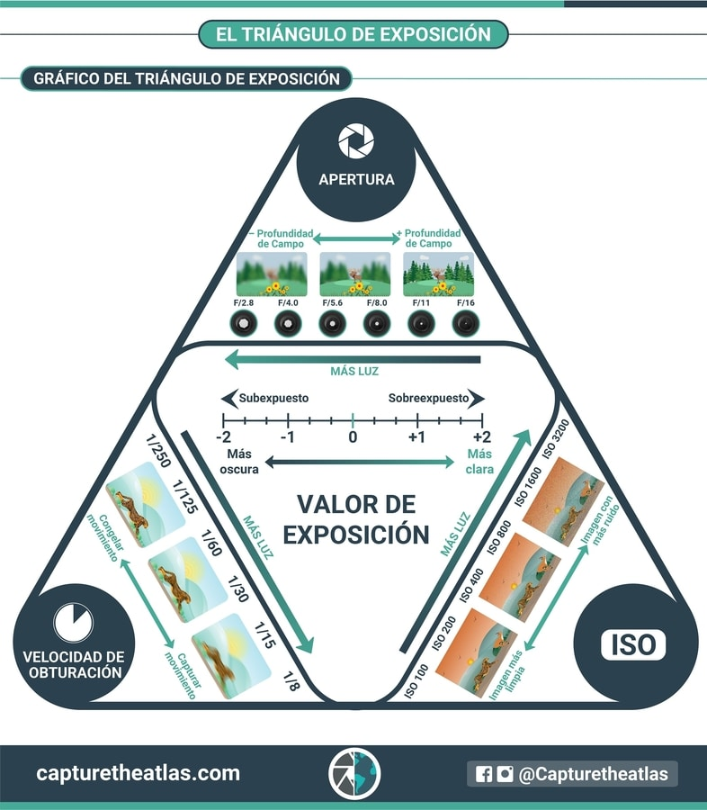
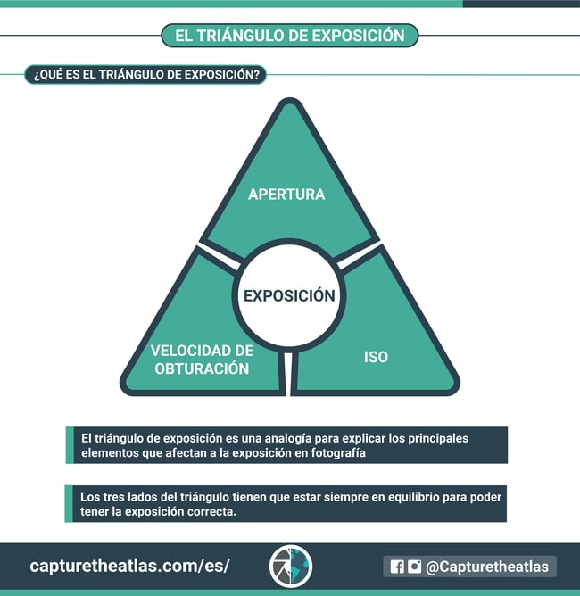

El triángulo de exposición hace referencia a los tres parámetros que determinan la exposición de una fotografía: Apertura, ISO y Velocidad. El equilibrio correcto entre esta tríada será la clave para obtener el resultado que esperamos en nuestras fotografías.
